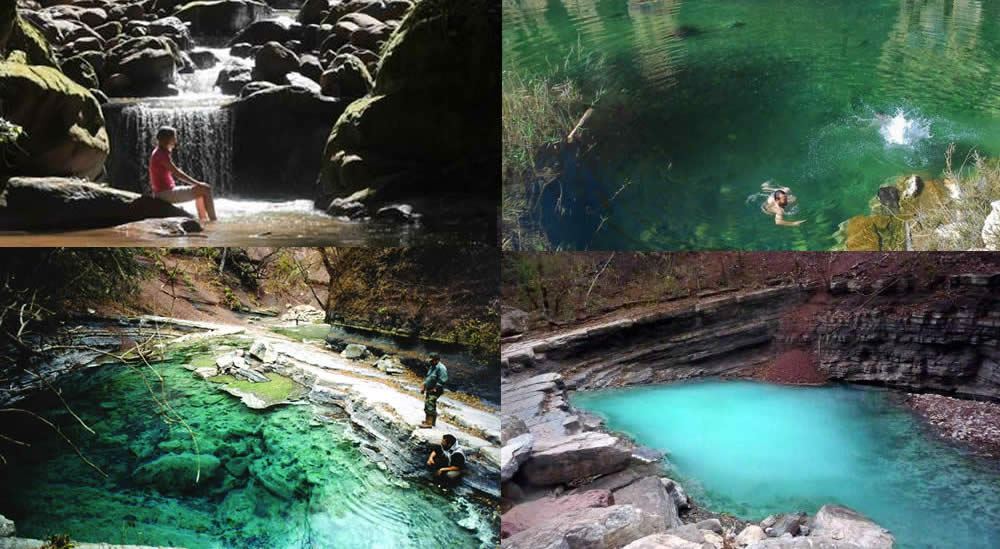
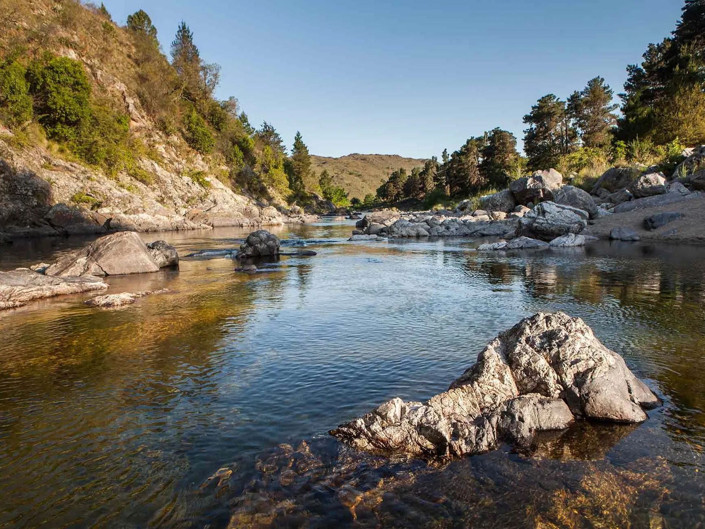
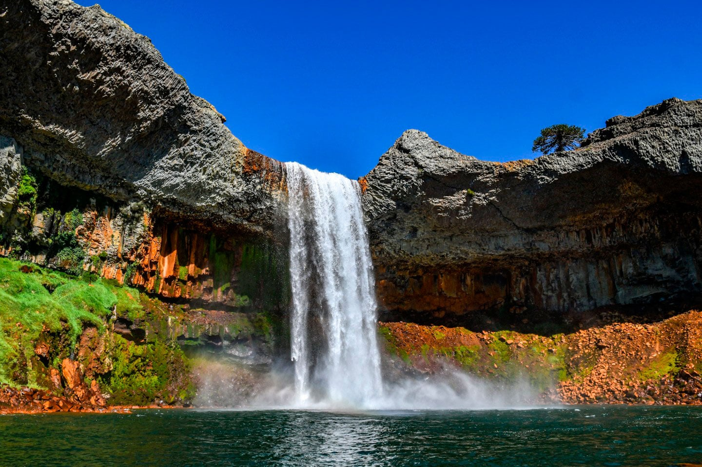

Viaje al Norte del pais
Animate a una travesia por el norte del pais. Iniciando el recorrido en Tucumán, subiendo por los valles de Salta y culminando en las Yungas Jujeñas. En el viaje, se realizaran recorridos a pie y en bicicleta por la montaña que pueden durar hasta 3 dias. Los guias están a cargo de un equipo autóctono que los asistirá en todo el recorrido.
Informacion


Viaje a las sierras cordobesas
Este recorrido tiene lugas en las sierras de Córdoba. Iniciando en la localidad de Villa Carlos Paz y haciendo un recorrido por los lugares mas lindos de la provincia. Con Trekking de dificultad intermedia que pueden durar todo un dia.
InformacionPatagonia Argentina
Esta aventura propone un recorrido por las provincias de Neuquén, Rio Negro y Chubut. Con actividades de caminatas que pueden durar hasta 2 dias, tirolesa y remo en kayak.
Informacion
